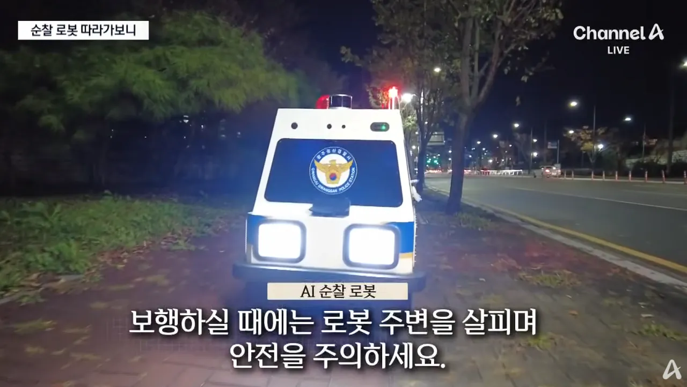
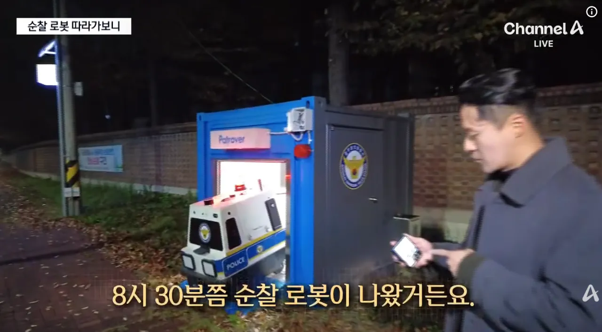
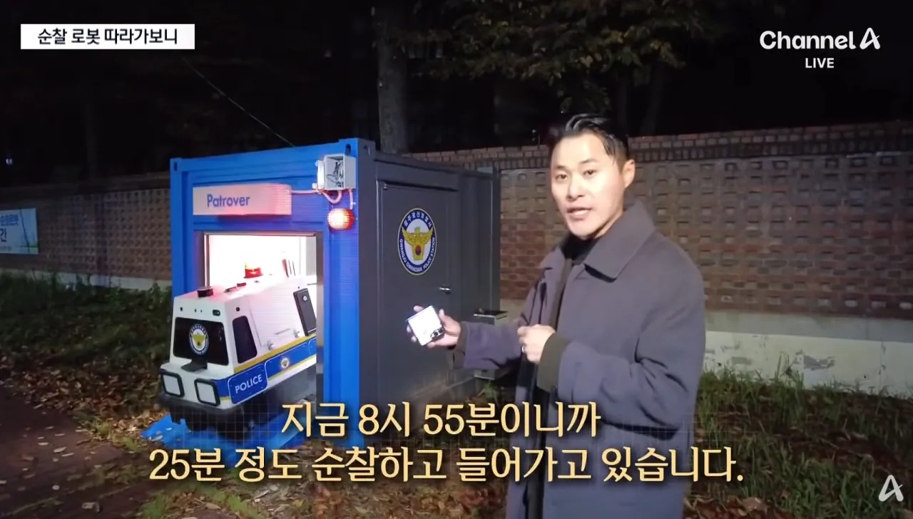
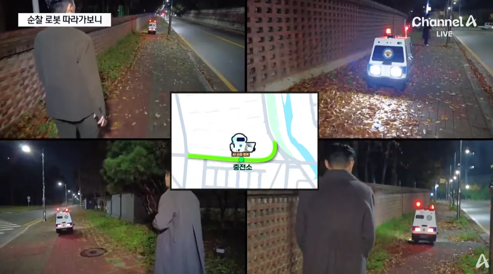
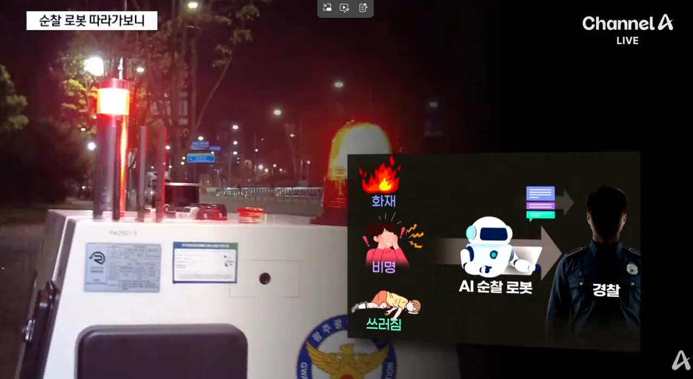
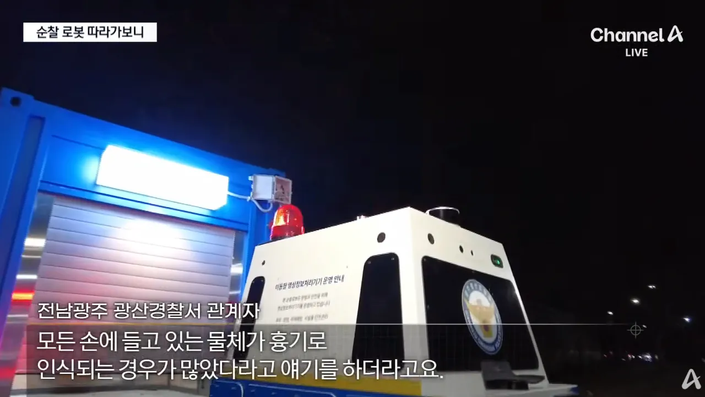
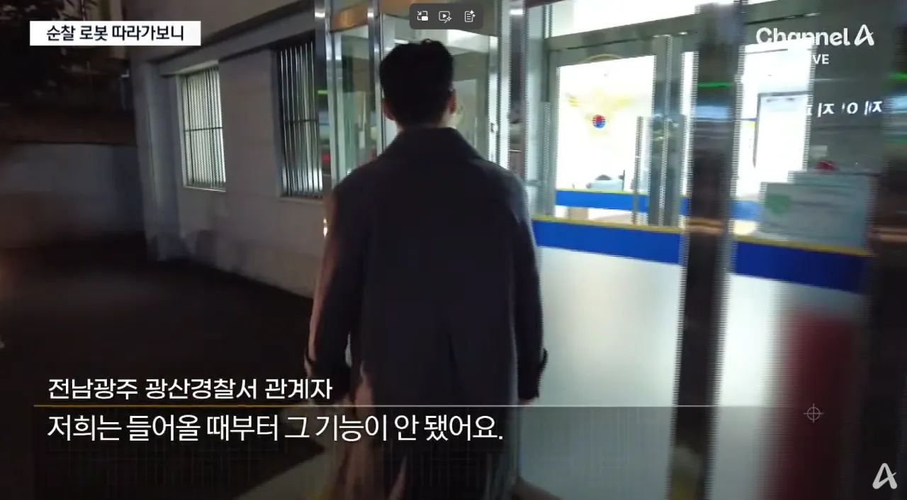
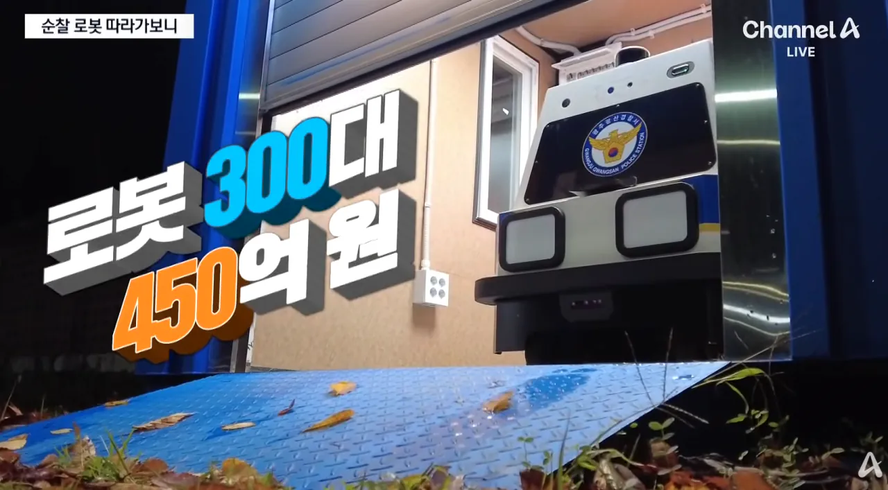

왕복 500미터 순찰후 30분 충전중이라고 함
세금 살살 녹는다!








왕복 500미터 순찰후 30분 충전중이라고 함
세금 살살 녹는다!
꼴깝
취객에 걷어 차이면 뭘할수 있지?
꾸준히 개량해 나가야지.
한입에 만족할수 없는법
여가부 이름 바꾸는거부터 시작이라고 거리는 새끼가 이 논리던데 ㅋㅋ
저 가격이 맞다봄??
아무리봐도 나라장터 퀄리티인데 ㅋㅋㅋㅋㅋㅋㅋ 외형좀 깔쌈하게 하지 디스토피아 비주얼 그자체
로봇개로 하지 총 달려있으면 개무서울텐데
대당 1억 5천이니까 그냥 임시직 300명 채용하면 5년 예산이네
CCTV.....
시발 속초에 있는 회서빙 로봇보다 못하네
또 어떤 시발새끼의 주머니로 세금이 들어갔을까 허허
도대체 cctv보다 얼마나 나은 억지력이 있는거지?
ㅋㅋㅋㅋㅋㅋㅋ 시발뭔
생긴게 중학교 과학동아리에서 만든거같네
나라꼴보소
스타텁에 맞겨도 퀄 훨씬 좋을탠데 지금 저런방식의 입찰이 맞나 싶다 세금도둑들 너무많은데 언제까지 저걸냅두려나
그거완전 디스토피아같다